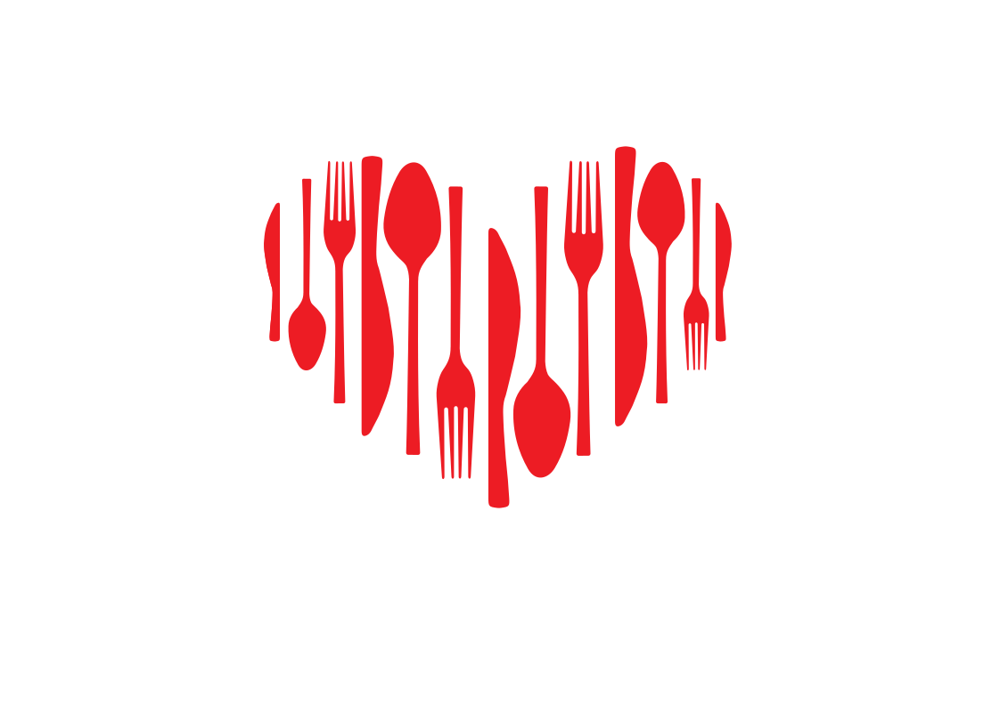

Pane e olio
Ogni cosa buona comincia da un gesto semplice.
Pane, olio, luce: materia riconoscibile, trattata con misura. È il modo MONO di dire accoglienza.
 Bottega Gastronomica
Scarica app
Bottega Gastronomica
Scarica app
Digital flagship
MONO racconta la cucina da ristorante nella vita di tutti i giorni: ordine, calore, qualità e memoria. Il sito ti fa entrare nel mondo, l'app ti porta alla tavola.
Cucina contemporanea, tradizionalmente moderna.
Bottega gastronomica
MONO è una bottega gastronomica contemporanea: cucina interna, banco curato, pasticceria, aperitivo, box e soluzioni per casa. La promessa è semplice: mangiare meglio, con meno attrito.
Il sito non deve sostituire l'app. Deve spiegare perché MONO esiste, cosa rende diverso il lavoro quotidiano e perché scaricare l'app diventa il gesto naturale dopo aver capito il progetto.
La tavola che si compone
Pane e olio
Pane, olio, luce: materia riconoscibile, trattata con misura. È il modo MONO di dire accoglienza.
Gastronomia
Preparazioni calde, banco gastronomico e piatti da rigenerare: qualità senza complicare la giornata.
Pasticceria
Monoporzioni, torte da credenza e piccoli gesti dolci: precisione, equilibrio e memoria.
Aperitivo
Non abbondanza casuale, ma piccoli piatti, bicchieri giusti e una tavola che invita a restare.
Take-away e gifting
Box, dolci, regali e soluzioni per casa mantengono la stessa cura del banco.
Gateway digitale
Ordini, vantaggi, caffè sospeso, inviti e attenzioni quotidiane: la vendita vive lì, non dentro mille pulsanti.
Scarica l'appDietro la semplicità, metodo
MONO tiene insieme cucina, banco, servizio e progetto sociale con un metodo chiaro: pochi elementi, ruoli leggibili, qualità controllata.
La bottega funziona perché ogni gesto è leggibile, ripetibile e umano.
Pochi elementi, stagionalità e preparazioni quotidiane che non gridano.
Piatti riconoscibili, portati in un linguaggio contemporaneo e accessibile.
L'app non è un gadget: è il modo più semplice per ordinare, tornare e partecipare.
MONO Convivium
MONO Convivium è il progetto sociale integrato nella bottega: inclusione, formazione e lavoro dignitoso non come appendice, ma come sistema operativo dell'impresa.
Scopri MONO Convivium
Formazione, affiancamento, mansioni chiare, autonomia progressiva.
La bottega, anche sul telefono
Dopo il racconto viene il gesto: ordinare, ritirare, ricevere vantaggi, partecipare al caffè sospeso, essere invitato quando c'è qualcosa che vale la pena sapere.
Santa Rita, Torino
App MONO
La bottega, anche sul telefono.
Ordini, vantaggi, caffè sospeso, inviti e piccole attenzioni per rendere più buono il quotidiano.
Il tuo posto a tavola, anche digitale.